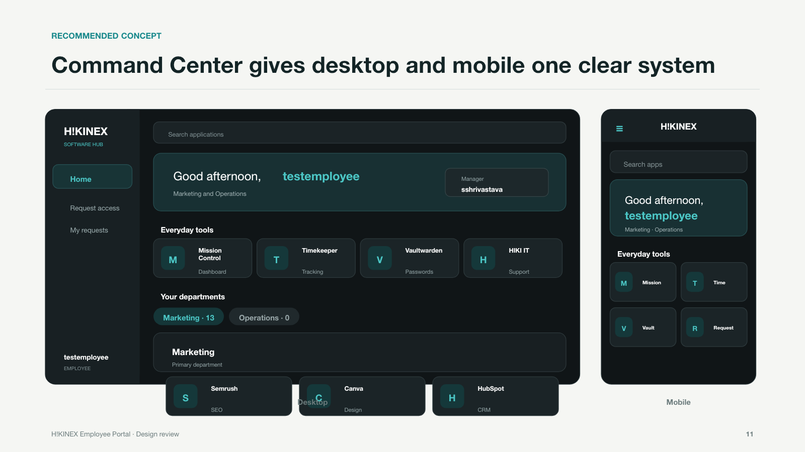
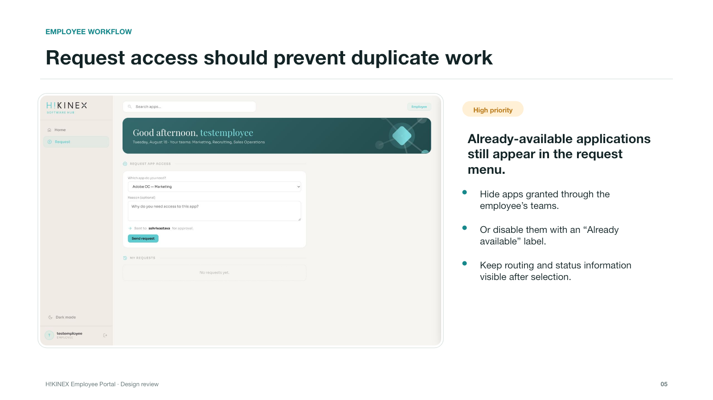
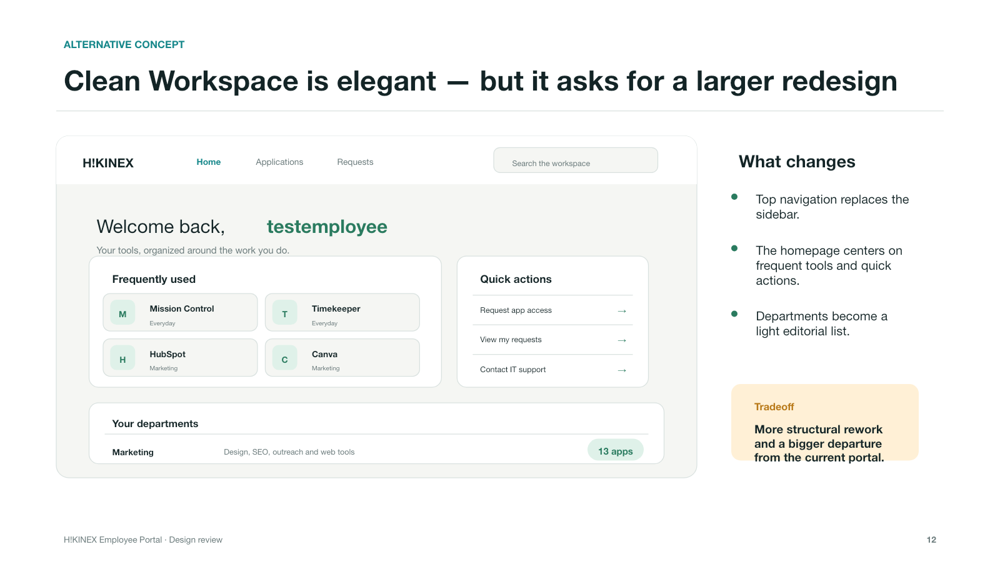

Product design · UX audit
HIKINEX
Employee Portal
A strategic UX review and design direction for a multi-role software portal—turning a fragmented app directory into one confident command center.

03User roles mapped02Responsive directions01Unified product system

